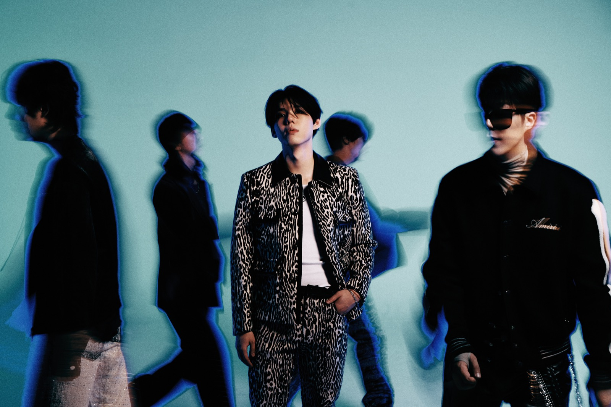
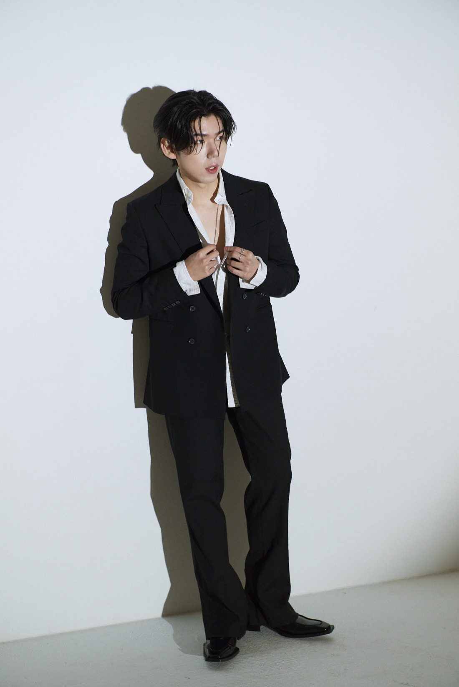
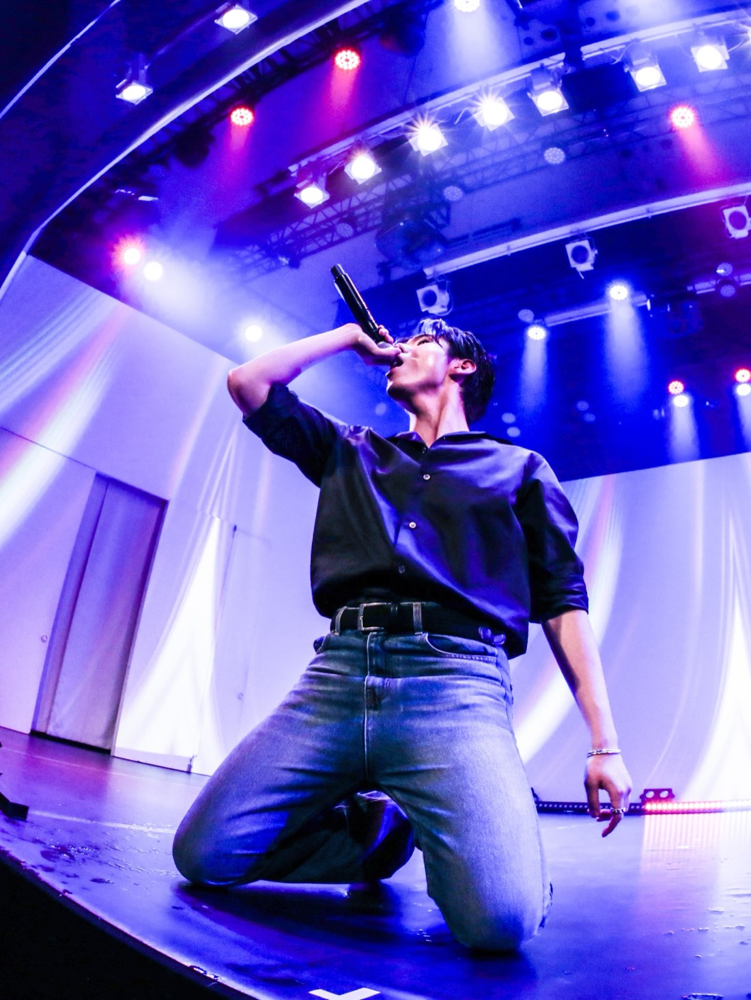
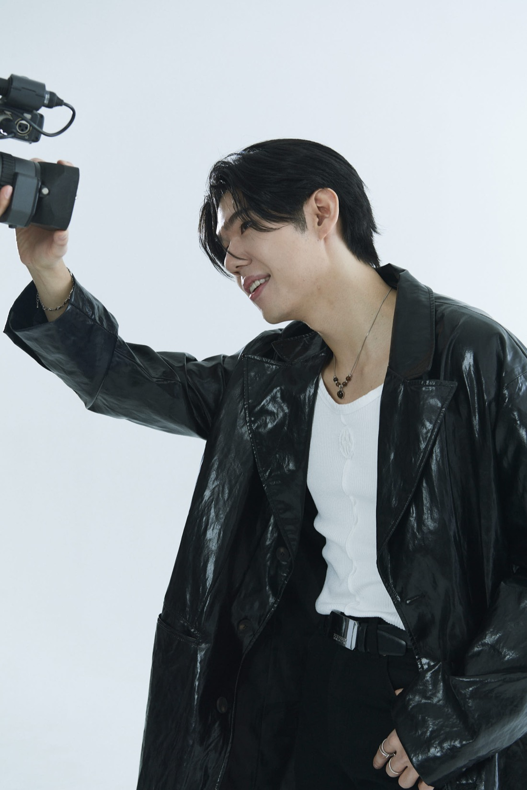
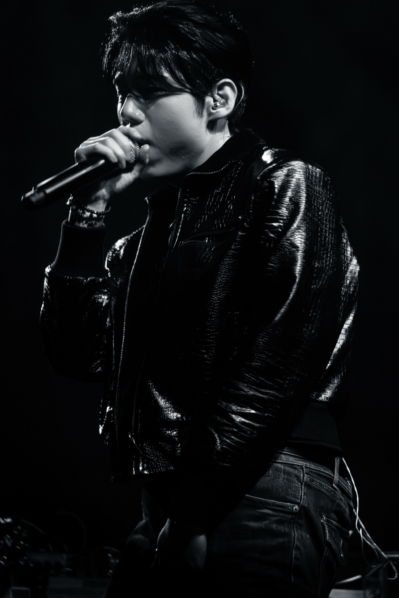

PLAN-G.IO
사람과 음악이 만나는 곳.
PLAN-G Entertainment는 진정성 있는 아티스트를 발굴하고 그들의 잠재력을 극대화하는 뮤직 레이블입니다.
우리는 독창적인 예술성과 혁신적인 사운드가 가진 힘을 믿습니다. 아티스트와 팬 사이의 깊이 있는 유대감을 형성하고, 음악 본연의 진정성을 지키며 새로운 가능성을 열어갑니다.
음악 제작부터 글로벌 유통에 이르기까지, PLAN-G는 아티스트의 창작 여정 전반을 함께하며 그들의 목소리가 전 세계로 뻗어나갈 수 있도록 든든한 파트너가 되겠습니다.
Now
01
신곡 발매 — 2026.08.12
KAVE — New Single
Flowerburn
Out 12 August 2026.
KAVE의 신곡 <FLOWERBURN>이 2026년 8월 12일 발매됩니다. 지금 티저 영상을 먼저 만나보세요.
Artists
02

Members
(05)-

01가호
-

02지상
-

03현
-

04오너
-

05준
GAHO
& KAVE
UNTOLD STORIES
Releases
03 — 2 releases
-
 To Mars
To Mars
- 시작이태원 클라쓰 OST Part 2
Stage
04
가호 (Gaho) · Brazil Tour 2026
To Mars Tour
22 AUG—05 SEP 2026
브라질 · 8개 도시
-
22 AUG
São Paulo
Studio Stage · SP
-
23 AUG
São Luís
Humberto de Maracanã · MA
-
28 AUG
Belém
Teatro It Center · PA
-
30 AUG
Fortaleza
Teatro Brasil Tropical · CE
-
01 SEP
Salvador
Teatro da Cidade · BA
-
03 SEP
Florianópolis
John Bull · SC
-
04 SEP
Porto Alegre
Centro de Eventos CIEE · RS
-
05 SEP
Curitiba
Igloo Super Hall · PR
가호 (Gaho) · 1st Japan Event
Start Over
26 JUL 2026
일본 · 도쿄
-
26 JUL
Japan
Tokyo · Hikousen Theater — Chapter 1. Special Fanmeeting
-
26 JUL
Japan
Tokyo · Hikousen Theater — Chapter 2. Special Live
Gaho & KAVE · Europe Tour 2026
Cityscapes — New Horizons
05—18 APR 2026
6개국 · 7개 도시
-
05—06 APR
Switzerland
Lausanne · Polymanga
-
08 APR
Poland
Warsaw · Hybrydy
-
09 APR
Germany
Berlin · Columbia Theater
-
11 APR
Germany
Cologne · CBE
-
15 APR
France
Paris · Café de la Danse
-
16 APR
Netherlands
Amsterdam · P60
-
18 APR
United Kingdom
London · The Underworld
가호 (Gaho) · AL!VE 월간종로
Monthly Jongno
14 FEB 2026
한국 · 서울
-
14 FEB
Korea
Seoul · CGV 피카디리1958 — 18:00
Press
05




